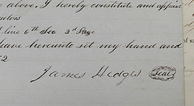

The Last Will and Testament of a military ancestor of mine: "General" James Hedges, who died in October 1854 near Mansfield, Ohio in the United States. It's possible that the signature you see in this image may be his original handwriting!
Updated: now includes an abstract, at the beginning of the post, which highlights the key dates, people, and property mentioned in this will.
 Abstract of the passport for Gloria Maria Candida del Rosario (Duarte y Ruiz) Valera of Cuba, from 1961. Includes a
Abstract of the passport for Gloria Maria Candida del Rosario (Duarte y Ruiz) Valera of Cuba, from 1961. Includes a  Learn how to find and request copies of New York City (NYC) Clerk Marriage Licenses using
Learn how to find and request copies of New York City (NYC) Clerk Marriage Licenses using  Abstract of the passport application for Maria Luisa Celia Rueda y Martinez (former married surname Valera), filed 15 May 1962 in Habana, Cuba. Includes a
Abstract of the passport application for Maria Luisa Celia Rueda y Martinez (former married surname Valera), filed 15 May 1962 in Habana, Cuba. Includes a  Abstract of the passport for Ernesto Luis Valera y Rueda of Cuba, from 1961. Includes a
Abstract of the passport for Ernesto Luis Valera y Rueda of Cuba, from 1961. Includes a  Obituary for Freda (Lazarus) Rosenberg in the Florida Times-Union newspaper of Jacksonville from 1974.
Obituary for Freda (Lazarus) Rosenberg in the Florida Times-Union newspaper of Jacksonville from 1974. Obituary for Reba (Lazarus) Bohrman in the Florida Times-Union newspaper of Jacksonville from 1973.
Obituary for Reba (Lazarus) Bohrman in the Florida Times-Union newspaper of Jacksonville from 1973. Abstract and images of the marriage applications of Elsie (Hettinger) Sleeseman and Thomas A. Rhodes in Whitley, Indiana, United States from 1922.
Abstract and images of the marriage applications of Elsie (Hettinger) Sleeseman and Thomas A. Rhodes in Whitley, Indiana, United States from 1922. Abstract and image of the marriage application and return of Lilyan Pence and William A. Meyers in Whitley, Indiana, United States from 1927.
Abstract and image of the marriage application and return of Lilyan Pence and William A. Meyers in Whitley, Indiana, United States from 1927. Abstract (and link to online image of original document) for the marriage record of Mary Jane Hazen and John Pence in Whitley, Indiana, United States from 1865.
Abstract (and link to online image of original document) for the marriage record of Mary Jane Hazen and John Pence in Whitley, Indiana, United States from 1865. Abstract (and link to online image of original document) for the marriage record of Sarah Strean and John Pence in Whitley, Indiana, United States from 1851.
Abstract (and link to online image of original document) for the marriage record of Sarah Strean and John Pence in Whitley, Indiana, United States from 1851. Two obituaries for H. (Henry) Oppert of Barbour, Alabama from 1892, including transcripts and images of the originals.
Two obituaries for H. (Henry) Oppert of Barbour, Alabama from 1892, including transcripts and images of the originals. Obituary for Mary Ella (Oppert) Tew of Houston, Alabama from 1962 Dothan Eagle.
Obituary for Mary Ella (Oppert) Tew of Houston, Alabama from 1962 Dothan Eagle. Obituary for Nancy (Sheppard) Oppert of Alabama from 1903 Dothan Houston Eagle.
Obituary for Nancy (Sheppard) Oppert of Alabama from 1903 Dothan Houston Eagle. Obituary for Louis A. Oppert of Alabama from 1936 Dothan Eagle.
Obituary for Louis A. Oppert of Alabama from 1936 Dothan Eagle. A certified transcript of the birth registration information for Gloria (Duarte y Ruiz) Valera, born 22 October 1915 in Mantua, Pinar del Rio province, Cuba. Includes a
A certified transcript of the birth registration information for Gloria (Duarte y Ruiz) Valera, born 22 October 1915 in Mantua, Pinar del Rio province, Cuba. Includes a  An abstract of basic facts, as well as links to the estate records for General James Hedges of Mansfield, Richland, Ohio (United States), from 1854 through 1858. I have another blog post that gives an
An abstract of basic facts, as well as links to the estate records for General James Hedges of Mansfield, Richland, Ohio (United States), from 1854 through 1858. I have another blog post that gives an  Profile of Henry C. Hedges of Mansfield (with helpful details about extended family, including General James) from historical Ohio book in 1891.
Profile of Henry C. Hedges of Mansfield (with helpful details about extended family, including General James) from historical Ohio book in 1891. Obituary for Goodman Lazarus in the News & Observer newspaper of Raleigh, North Carolina from 1945.
Obituary for Goodman Lazarus in the News & Observer newspaper of Raleigh, North Carolina from 1945. Three obituaries for Mary Florence Ruckman Pence of Whitley county, Indiana from 1967.
Three obituaries for Mary Florence Ruckman Pence of Whitley county, Indiana from 1967. Two obituaries for Carrie Long Pence Raypole of Churubusco and Whitley county, Indiana from 1972.
Two obituaries for Carrie Long Pence Raypole of Churubusco and Whitley county, Indiana from 1972. Last Will and Testament of Peter Frank, Senior (d. 1872), downloaded as a digitized will shared on the Adams county INGenWeb genealogy website.
Last Will and Testament of Peter Frank, Senior (d. 1872), downloaded as a digitized will shared on the Adams county INGenWeb genealogy website. Abstract (and link to online image of original document) for the marriage record of Amy Puterbaugh and Wilson Frank in Darke, Ohio, United States from 1878.
Abstract (and link to online image of original document) for the marriage record of Amy Puterbaugh and Wilson Frank in Darke, Ohio, United States from 1878. Abstract (and link to online image of original document) for the marriage record of Valeria Frank and John H. Sipe in Darke, Ohio, United States from 1873.
Abstract (and link to online image of original document) for the marriage record of Valeria Frank and John H. Sipe in Darke, Ohio, United States from 1873. Abstract (and link to online image of original document) for the marriage record of Sadie Sleesman and Abraham M. Long in Whitley, Indiana, United States from 1884.
Abstract (and link to online image of original document) for the marriage record of Sadie Sleesman and Abraham M. Long in Whitley, Indiana, United States from 1884. An obituary and funeral notice from 1908 for Alfred J. Stouffs of Richmond, Virginia, and formerly a resident near Fort Wayne, Indiana.
An obituary and funeral notice from 1908 for Alfred J. Stouffs of Richmond, Virginia, and formerly a resident near Fort Wayne, Indiana. Report from Chilcothe letter via Lexington, Kentucky newspaper of James Hedges' involvement in a skirmish near Fort Stephenson, Sandusky, Ohio in 1813.
Report from Chilcothe letter via Lexington, Kentucky newspaper of James Hedges' involvement in a skirmish near Fort Stephenson, Sandusky, Ohio in 1813.
 Report in 1812 (originally from Belmont, Ohio newspaper) via
Report in 1812 (originally from Belmont, Ohio newspaper) via  Transcript (and link to online image of original document) for the marriage record of Elsa Hettinger and Jacob Sleeseman of Allen, Indiana, United States from 1863.
Transcript (and link to online image of original document) for the marriage record of Elsa Hettinger and Jacob Sleeseman of Allen, Indiana, United States from 1863. Transcript (and link to online image of original document) for the marriage record of Margaret Schuman and Abraham Myers in Clark, Ohio, United States from 1854.
Transcript (and link to online image of original document) for the marriage record of Margaret Schuman and Abraham Myers in Clark, Ohio, United States from 1854. Transcript (as well as links to original document images) of the marriage application, license and certificate of Carrie B. Long and Heber J. Pence in Whitley, Indiana, United States from 1909.
Transcript (as well as links to original document images) of the marriage application, license and certificate of Carrie B. Long and Heber J. Pence in Whitley, Indiana, United States from 1909. Transcript (as well as downloadable PDF) of the marriage record of Betty Jean Pence and William A. Meyers in Whitley, Indiana, United States from 1944.
Transcript (as well as downloadable PDF) of the marriage record of Betty Jean Pence and William A. Meyers in Whitley, Indiana, United States from 1944. An abstract of basic facts, as well as a downloadable PDF of key images from this divorce record for Diana Phillips (of Allen county, Indiana) and Michael Slessman of Whitley County, Indiana, United States in 1852.
An abstract of basic facts, as well as a downloadable PDF of key images from this divorce record for Diana Phillips (of Allen county, Indiana) and Michael Slessman of Whitley County, Indiana, United States in 1852. An abstract of facts, as well as a downloadable PDF of key images from this divorce record for Elsie (Hettinger) and Jacob Sleeseman of Whitley County, Indiana, United States in 1904.
An abstract of facts, as well as a downloadable PDF of key images from this divorce record for Elsie (Hettinger) and Jacob Sleeseman of Whitley County, Indiana, United States in 1904. An obituary for Peter Frank, Sr. of Adams county, Indiana from the Greenville (Ohio) Democrat in 1872.
An obituary for Peter Frank, Sr. of Adams county, Indiana from the Greenville (Ohio) Democrat in 1872. Image and transcript of the obituary for Jacob Slessman, age 36, son of Michael Slessman, of Whitley county, Indiana from 1893.
Image and transcript of the obituary for Jacob Slessman, age 36, son of Michael Slessman, of Whitley county, Indiana from 1893. Obituary and funeral notice for Mr. Bill Lazarus of Trenton, Florida from 1987.
Obituary and funeral notice for Mr. Bill Lazarus of Trenton, Florida from 1987. Obituary for H. Oppert of Clayton, Barbour, Alabama from 1892.
Obituary for H. Oppert of Clayton, Barbour, Alabama from 1892. Obituaries for Nathan Zelkind of Lake City, Florida from 1964.
Obituaries for Nathan Zelkind of Lake City, Florida from 1964. Obituary for William Lazarus of Valdosta, Georgia from 1965.
Obituary for William Lazarus of Valdosta, Georgia from 1965. Obituaries for Harry Lazarus of Valdosta, Georgia from 1946.
Obituaries for Harry Lazarus of Valdosta, Georgia from 1946. Obituaries for Sam Lazarus of Valdosta, Georgia from 1950.
Obituaries for Sam Lazarus of Valdosta, Georgia from 1950. Obituaries for Maggie (Oppert) Lazarus of Valdosta, Georgia from 1962.
Obituaries for Maggie (Oppert) Lazarus of Valdosta, Georgia from 1962.
 Obituaries for Baseva (Pearlman) Lazarus of Valdosta, Georgia from 1930.
Obituaries for Baseva (Pearlman) Lazarus of Valdosta, Georgia from 1930.
 An obituary for Harry Lazarus of Valdosta, Georgia from 1946. Updated with a link to
An obituary for Harry Lazarus of Valdosta, Georgia from 1946. Updated with a link to  An obituary (from Colorado) for Toby Albert Long, originally of Churubusco, Indiana, from 1933.
An obituary (from Colorado) for Toby Albert Long, originally of Churubusco, Indiana, from 1933. An obituary for Herman Frank of Columbia City, Indiana from 1964.
An obituary for Herman Frank of Columbia City, Indiana from 1964.  Profile of John L. H. Frank (b. 1837) from historical Montgomery county (Ohio) book in 1897.
Profile of John L. H. Frank (b. 1837) from historical Montgomery county (Ohio) book in 1897. Profile of Joseph Frank (b. 1859) from historical Montgomery county (Ohio) book in 1897.
Profile of Joseph Frank (b. 1859) from historical Montgomery county (Ohio) book in 1897. Profile of Samuel D. Frank (b. 1841) from historical Miami county (Ohio) book in 1900.
Profile of Samuel D. Frank (b. 1841) from historical Miami county (Ohio) book in 1900. Profile of John G. Frank (b. 1834) from historical Darke county (Ohio) book in 1900.
Profile of John G. Frank (b. 1834) from historical Darke county (Ohio) book in 1900. Two obituaries for Nancy Ann (Hedges) Pence of Whitley county, Indiana from 1929.
Two obituaries for Nancy Ann (Hedges) Pence of Whitley county, Indiana from 1929. Newspaper reports on and obituaries for Heber J. Pence, Joseph Hawk, and Frederick Coy, following their deaths at a Whitley county railroad crossing in 1929.
Newspaper reports on and obituaries for Heber J. Pence, Joseph Hawk, and Frederick Coy, following their deaths at a Whitley county railroad crossing in 1929. Two obituaries for Joseph M. Pence of Whitley county, Indiana from 1936.
Two obituaries for Joseph M. Pence of Whitley county, Indiana from 1936. An obituary for John Pence of Whitley county, Indiana from 1895.
An obituary for John Pence of Whitley county, Indiana from 1895. Profile of George Frank (b. 1815) from historical Adams county (Indiana) book in 1887.
Profile of George Frank (b. 1815) from historical Adams county (Indiana) book in 1887. Profile of John Frank (b. 1840) from historical Adams county (Indiana) book in 1887.
Profile of John Frank (b. 1840) from historical Adams county (Indiana) book in 1887. An obituary for Sarah Ellen "Sadie" (Sleeseman) Long of Churubusco, Indiana from 1945.
An obituary for Sarah Ellen "Sadie" (Sleeseman) Long of Churubusco, Indiana from 1945.  An obituary for Abraham Long of Churubusco, Indiana from 1936.
An obituary for Abraham Long of Churubusco, Indiana from 1936. An obituary for "General" James Hedges of Mansfield, Ohio from 1854.
An obituary for "General" James Hedges of Mansfield, Ohio from 1854. An obituary for "General" James Hedges of Mansfield, Ohio from 1854.
An obituary for "General" James Hedges of Mansfield, Ohio from 1854. An obituary for Josiah Hedges, brother of "General" James Hedges and also the founder of the city of Tiffin, Ohio in the United States.
An obituary for Josiah Hedges, brother of "General" James Hedges and also the founder of the city of Tiffin, Ohio in the United States.") My (mostly readable and occasionally incomplete) notes from the "
My (mostly readable and occasionally incomplete) notes from the "